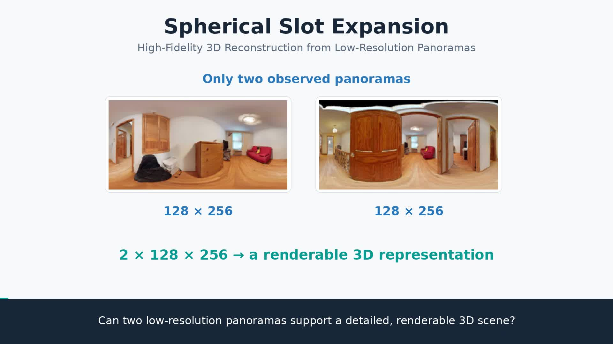
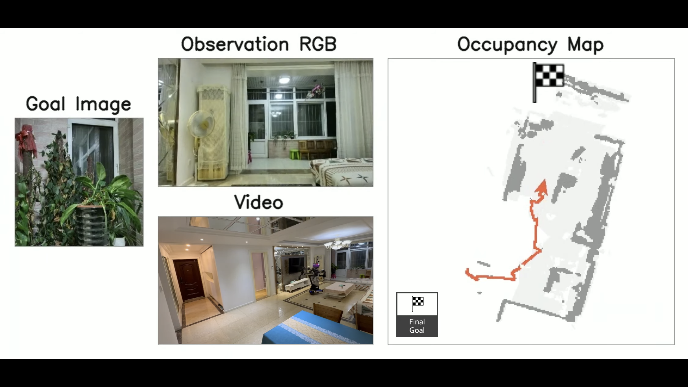

01 — 全景 3DGS / 项目演示
前馈式三维重建：低分全景 3DGS 与高分辨率新视角合成
面向两张 128 × 256 ERP 全景图，开发前馈式三维高斯预测网络，渲染 512 × 1024 新视角全景。
- HEALPix 球面候选扩展与方向、观测覆盖编码。
- 双视图关联、DiT-style 局部细化与教师特征蒸馏。
- 在 HM3D 与 Replica 上开展同域、跨域评测与消融。
汉王科技 · 主要开发人员
算法工程师 · 北京
从三维感知，到真实世界的行动。
我目前在汉王科技担任算法工程师，拥有 8 年自动驾驶、无人机及机器人算法研发经验。此前就职于臻迪无人机和易图通。2018 年毕业于日本广岛市立大学信息科学学院，获得硕士学位，导师为 Prof. Shigang Li。
目前主要从事三维场景重建、视觉语言导航与 VLA 真机部署。过往工作涉及多传感器融合定位、无人机导航、目标跟踪及地理定位，以及嵌入式平台上的算法开发与优化。

RESEARCH IN FOCUS / PANORAMIC 3DGS精选项目 · 方法探索与系统实现
面向两张 128 × 256 ERP 全景图，开发前馈式三维高斯预测网络，渲染 512 × 1024 新视角全景。
汉王科技 · 主要开发人员
基于 SO-101 Leader/Follower 机械臂及桌面、腕部双视角相机，适配 π0.5 预训练策略，打通观测输入至 Action Chunk 执行链路。
汉王科技 · 主要开发人员
基于海思 3559A，实现 EKF 目标状态估计、20 m 范围内 10 Hz ESDF 更新、反应式规划与轨迹跟随，并使用 NEON 加速。
设计符合无人机运动学约束的轨迹跟随方法，实现平稳飞行与流畅跟随，并保持适当的跟随距离。
臻迪无人机 · 主要开发人员

以 Goal Graph 与增量 Scene Graph 统一类别、图像和文本目标；复现图匹配驱动的三阶段探索，在 Habitat / HM3D 中评测 SR 与 SPL。
结合 UCMCTrack 地面运动建模、Kalman Filter 与多目标关联，融合视觉、GNSS、IMU 和飞行高度，实现目标地理位置估计。
打通双目 / IMU 同步、噪声分析与内外参标定，基于 VINS 估计姿态，结合 SGBM 视差计算开展大场景三维重建。
三维重建、具身智能、无人机跟踪与定位
无人机避障导航、智能跟随与端侧优化
多传感器融合定位与高精地图重建
信息科学学院 · 计算机视觉 / 导师：Prof. Shigang Li
电气与控制工程学院 · 测控技术与仪器
Jianfeng Li, Xiaowei Wang
三维视觉与研究：前馈 3DGS、球面表示、教师蒸馏、PyTorch 训练与评测。
机器人与几何：多传感器融合、视觉惯性定位、目标跟踪、栅格地图与导航。
工程开发：C / C++、Python、Linux、ROS1 / ROS2、NEON、NPU / GPU 应用开发；海思、NVIDIA、君正、瑞芯微平台。
欢迎交流三维视觉、具身智能与机器人系统。